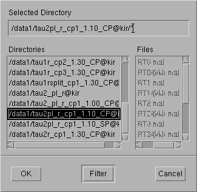
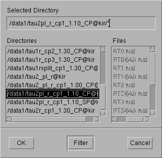

Press "OK".
 

To go up in the hierarchy you need to double-click on the ".." file. Select the right directory and press "OK"
2003 3 7 16 0 0
2003 3 7 23 0 0
/analysis/results/2003-03-07_tau2@KirNormally this is what you want, othervise click on it and select/create a specific one.
For remote sites I recommend: "0 0 1 0 1" (fits+vizu)
For transmitting sites I recommend: "0 1 0 0 1" (powerprofile+vizu)
A good thing to include is the "NCAR" parameter, which tells if NCAR results file(s) should be produced: 0 for no NCAR files, 1 for ASCII NCAR, 2 for binary NCAR, 3 for both ASCII and binary.
For a transmitting site the output to the screen can be minimised with "display_results=0", which may speed up the process.
For dual-beam VHF experiment this is normally the place to enter which beam to analyse.
"analysis_txlimit=0; f_ch_Pt=1.2e6" will integrate the data even if the transmitter is recorded as off and force the tx power to 1.2 MW. Needed sometimes at remote sites.
"a_Offsetppd" should be set to the number of microseconds the remote site clock differs from Tromso.
"f_calTemp" will set the calibration temperature to the correct value, if recorded wrong.
"Magic_const" is another parameter to set here, if needed.

Remember that "%" will comment out the rest of the line, so one can keep the command there for later reference if you don't want it this time. Here, only the NCAR parameter is active.